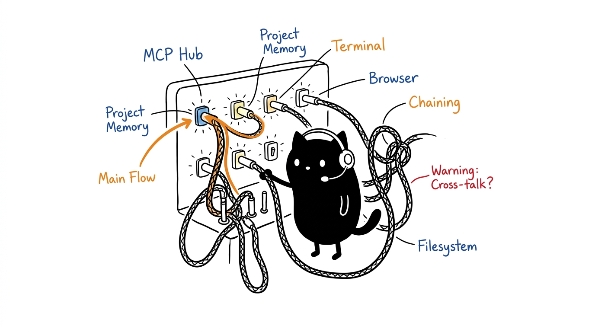

HeLa Cellular MCP Workbench
A reproducible, 10-server MCP distribution suite for AI agents. Dual-backbone orchestration (reasoning + memory), deterministic stdio transport, and per-profile client configuration across 8 agent harnesses.

What this is
Ten specialized servers, each a biological cell with one job. Two backbones coordinate them: HeLa Mitosis (task reasoning and routing) and HeLa Genome (persistent memory graph). The remaining eight cells provide filesystem, execution, processes, research, browser, design, mobile, and 3D capabilities.
| Cell | ID | Scope | Role |
|---|---|---|---|
| Mitosis | hela-mitosis | core | Orchestration backbone |
| Genome | hela-genome | core | State & memory backbone |
| Membrane | hela-membrane | core | Workspace filesystem |
| Nucleus | hela-nucleus | core | Execution boundary |
| Ribosome | hela-ribosome | core | Process harness |
| Enzyme | hela-enzyme | core | Knowledge synthesis |
| Cytosol | hela-cytosol | core | Browser interaction |
| Phenotype | hela-phenotype | specialized | Design & tokens |
| Receptor | hela-receptor | specialized | Mobile automation |
| Plastid | hela-plastid | specialized | 3D Blender modeling |
Full tool catalogs, entries, and repositories: 04 Architecture. Named in recognition of Henrietta Lacks (1920–1951): modular specialization, deterministic replicability, longevity.
Installation
Requirements: Node.js 20+ LTS, Git 2.25+, SQLite3. Optional per cell: Playwright Chromium (cytosol), ADB (receptor), Blender 4+ (plastid).
git clone https://github.com/1999AZZAR/hela-mcp-ecosystem.git
cd hela-mcp-ecosystem
./setup.sh --profile dev-workspace --client opencodesetup.sh clones, builds, and writes the client configuration for the chosen profile. Useful flags: --system gui|headless, --reconfigure (config only), --dev (track branches instead of pins), doctor (diagnostics).
Verify
Three gates, all expected green before use:
./setup.sh doctor # 10/10 [READY] Stdio JSON-RPC OK
npm test # 13 passed: 10 handshakes + 3 synergies
npm run test:matrix # 70 passed: profile × client schema accuracyNext steps
- Understand the organism. Read 04 Architecture for the dual-backbone model and per-server tool catalogs.
- Pick a profile. Seven pre-configured stacks (full desktop to headless CI) in 06 Profiles & Config — generate the client file with the configurator.
- Run a workflow. Six cross-MCP pipelines (feature engineering, research, UI verification, mobile QA, PTY orchestration, 3D) in 05 Workflows.